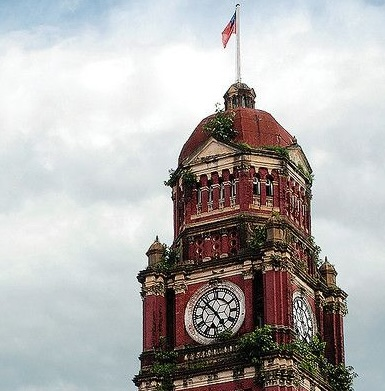

Shwedagon Pagoda
The Shwedagon Pagoda is the most famous pagoda in the world and a must-visit place in Yangon. The pagoda is located in the heart of Yangon and is a symbol of Buddhism in Myanmar.

Sule Pagoda
The Sule Pagoda is a Burmese stupa located in the heart of downtown Yangon, occupying the centre of the city and an important space in contemporary Burmese politics, ideology and geography.

Secretariat Building
The Secretariat Building is the former administrative headquarters of British Burma. It is located in the downtown area of Yangon. The building is a fine example of British architecture in Yangon.